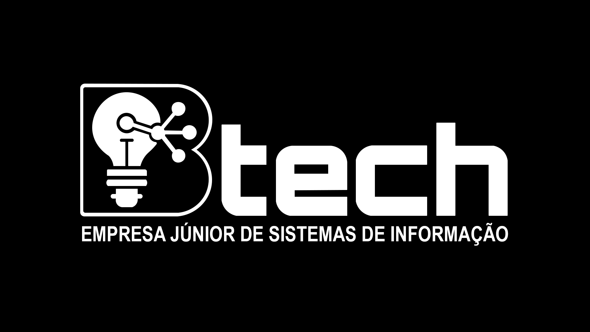
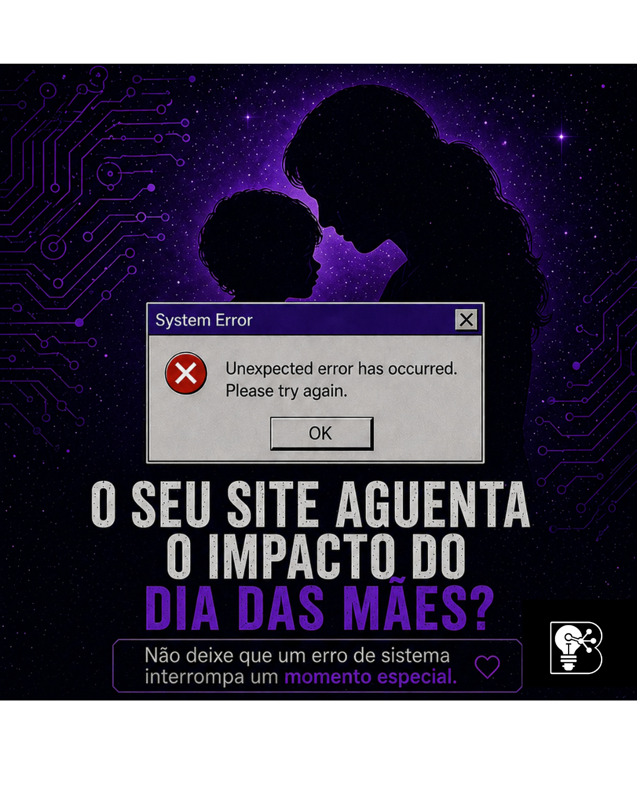
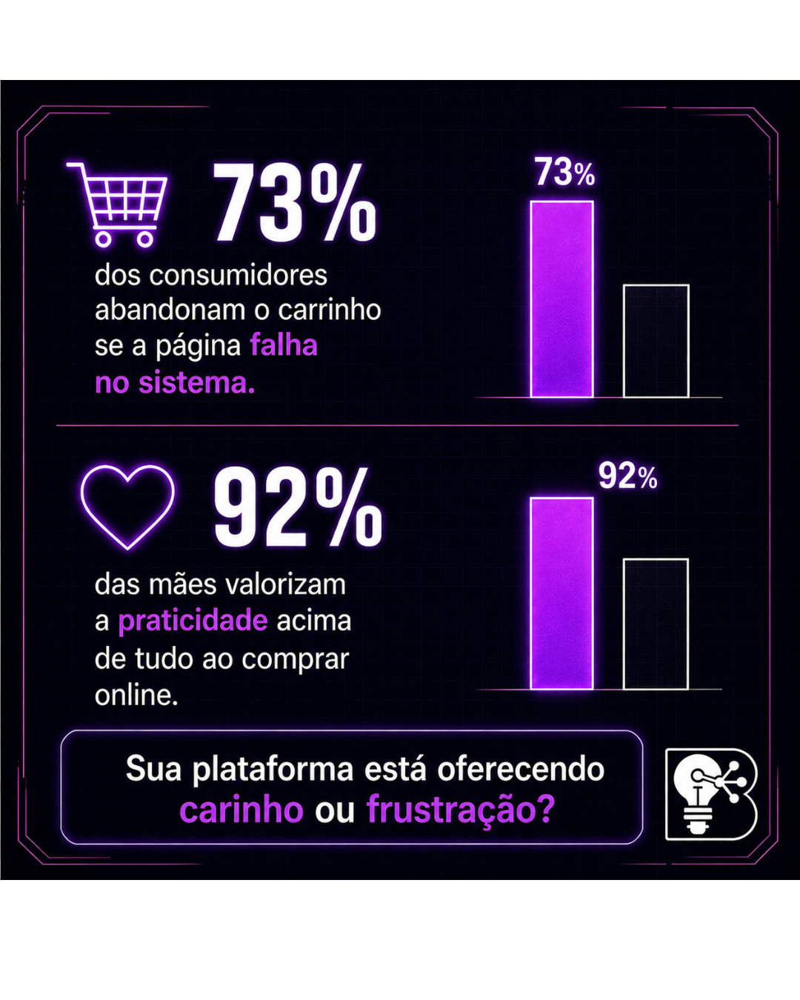
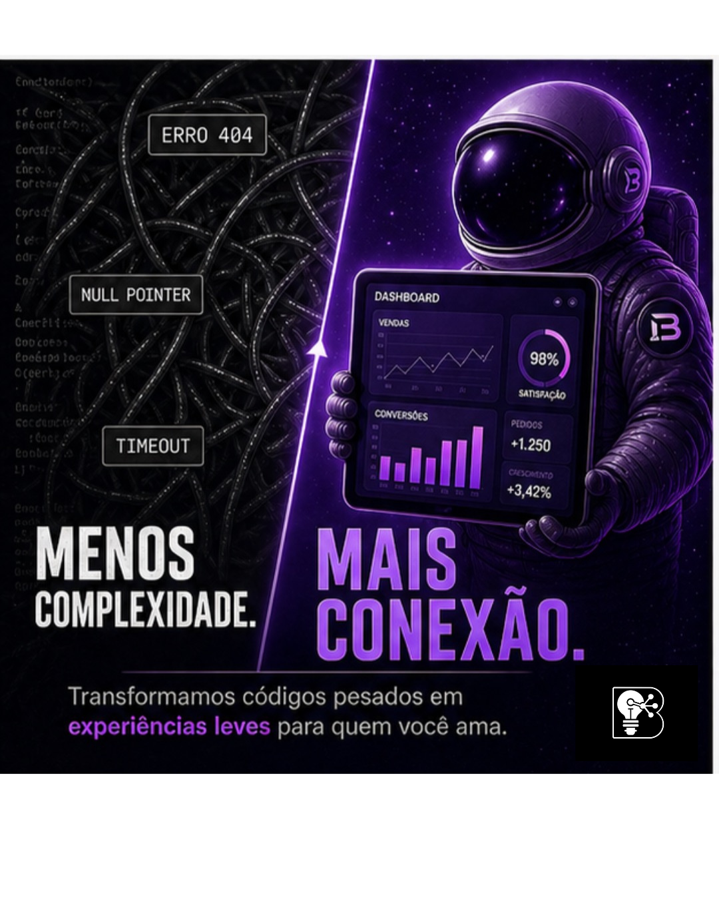
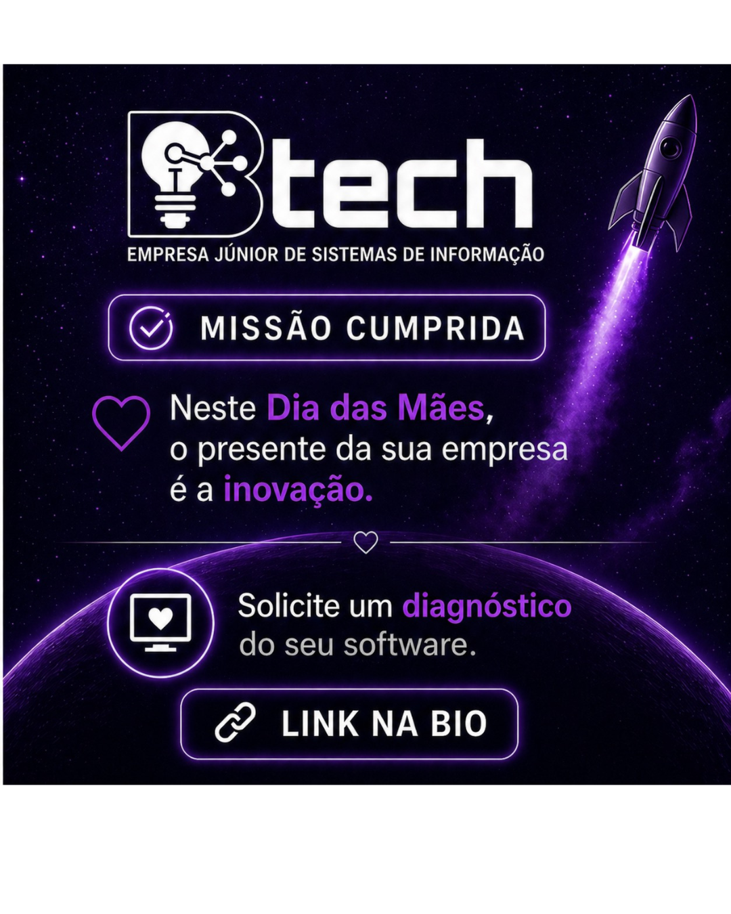

Grupo 3
Desenvolvimento de software com metodologia ágil, para negócios que precisam de presença digital sólida — especialmente em momentos de alta demanda.
Integração de conteúdo no feed, vídeo e Reels, relacionamento orgânico e impulsionamento na Meta para gerar interesse e conversas com potenciais clientes.
Hook em data comercial (pico de acessos) + promessa de confiabilidade + CTA para bio / contato.
Educar em sequência (problema → risco → solução → prova) e aumentar tempo de permanência no post — sinal positivo para o algoritmo.
A tecnologia deve ser uma ponte, nunca uma barreira.
No Dia das Mães, o fluxo de acessos aumenta e a expectativa dos clientes está no topo. Se o seu sistema trava ou a experiência do usuário é confusa, você não perde apenas uma venda; você perde a chance de fidelizar.
Na BTech Jr., aplicamos metodologias ágeis e tecnologias de ponta para garantir que sua plataforma seja tão sólida quanto o compromisso que você tem com seus clientes.
Não espere o "erro 404" acontecer para pensar na sua infraestrutura. O momento de escalar é agora.
Clique no link da nossa bio e descubra como podemos levar sua empresa para o próximo nível.





No dia a dia da campanha costuma ser uma peça ou outra por vez — mas as duas conversam com o mesmo posicionamento: vídeo institucional para alcance e credibilidade; Reels para descoberta e tom humano no feed. Abaixo, formato e produção; o roteiro cena a cena da peça em vídeo está nos dois slides seguintes.
Objetivo: alcançar potenciais clientes e gerar interesse. Cortes rápidos (15–45s), VO claro, tom profissional. Formatos: 9:16 (Reels/TikTok) ou horizontal para anúncios e In-Stream na Meta — mesma narrativa, adaptada ao canal.
Trilha lo-fi ou futurista em volume baixo; legendas queimadas (boa parte da audiência assiste sem som).
Objetivo: descontração, prova social e algoritmo. Pautas: "3 sinais de que seu site precisa de manutenção", "POV: você pediu um MVP na EJ", antes/depois (com autorização). Celular, boa luz, cortes a cada 1–2s, texto na tela; CTA: "comenta SITE" ou link na bio.
https://vt.tiktok.com/ZS9mdr1Pt/ · https://vt.tiktok.com/ZS9mdTunR/ · https://vt.tiktok.com/ZS9mdfmhP/ · https://vt.tiktok.com/ZS9mdFJj8/
Parte 1 de 2 — narração (VO) e direção de imagem por cena.
Parte 2 de 2 — multiplataforma, CTA e legenda para publicação.
Dê o próximo passo rumo à inovação. Entre em contato com a gente pelo Direct ou clique em Saiba Mais e faça seu orçamento sem compromisso!
BTech Jr. — Soluções em Sistemas de Informação que impulsionam o seu negócio.
Foco em consistência, relacionamento e autoridade local — canais que a EJ já controla.
Stories diários (bastidores, dúvidas, enquetes). Lista de transmissão ou grupo de clientes potenciais com opt-in. Resposta rápida no WhatsApp da EJ.
Sebrae, incubadoras, professores, comunidades tech (Discord/Meetups). Indicação cruzada com outras EJs não concorrentes.
Cases com métricas (tempo de carregamento, conversão). Google Perfil de Empresa com fotos, serviços e link. Artigo no Medium/LinkedIn com problema→solução.
DM ou e-mail personalizado para negócios locais com site desatualizado — uma linha de dor + convite para diagnóstico gratuito de 15 minutos (limite de vagas).
Parte 1 de 2 · Plataforma: Meta (Facebook + Instagram) por segmentação fina e hábito de donos de negócio consumirem rede social.
Empresários, empreendedores e empresas que precisam fortalecer presença digital (com ou sem site). Idade: 23–55 anos (teste A com 25–40). Geo: Bahia, prioridade Vitória da Conquista + raio de 40 km.
Escolha principal desta campanha: objetivo Leads — formulário instantâneo da Meta ou lead ads equivalente, para captar contato dentro do ecossistema e medir CPL com clareza.
Teste complementar (opcional): duplicar o conjunto com objetivo Tráfego apontando para WhatsApp ou página de destino, comparando custo por conversa iniciada vs. CPL do formulário.
Interesses: empreendedorismo, pequenas empresas, marketing digital, gestão empresarial. Comportamentos: engajamento com negócios, tecnologia ou compras online (refinar após 1ª leva de dados).
Fase de aprendizado: R$ 10 a R$ 20/dia (7–14 dias). Depois, realocar verba para o anúncio/plano de público vencedor.
Parte 2 de 2 · Mensuração, otimização e testes de anúncio.
CPL e taxa de conversão do lead · CPC (faixa típica R$ 0,40–6,00 conforme leilão) · CTR · CPM (R$ 8–50) · Frequência · Qualidade do ranking.
Teste A/B de criativo e primeira linha de texto; duplicar conjuntos com uma variável por vez; pausar combinações com CPL acima da meta.
Sua empresa ainda não tem site?
Você pode estar perdendo clientes todos os dias.
Fale com a gente e leve seu negócio para o digital.
Tenha um site profissional e aumente suas vendas.
Atraia mais clientes e fortaleça sua empresa online.
Clique e fale com um especialista.
A BTech Jr. precisa aparecer para quem contrata software e transformar interesse em conversa comercial. Este planejamento integra os canais para que a divulgação não fique solta — cada peça reforça a outra até o funil de vendas.
O carrossel educa sobre dor real (picos de demanda, sistemas estáveis) e posiciona a BTech Jr. como quem entende operação — autoridade antes do orçamento.
Vídeo e Reels ampliam descoberta e humanizam a equipe; o orgânico mantém a marca visível entre impulsionamentos, sem depender só de mídia paga.
A Meta entrega a mensagem a empreendedores e negócios na Bahia e na região, com segmentação e teste A/B — menos dispersão, mais gente com perfil de compra.
Objetivo de anúncio, verba de teste e métricas (CPL, CPC, CTR, CPM) permitem ver o que gera lead, cortar o que não performa e reinvestir no que alimenta o funil de vendas.
Em conjunto: mais exposição qualificada, mensagem coerente em todos os pontos de contato e decisões baseadas em dado — o caminho mais direto entre divulgação consistente e oportunidades que podem fechar negócio para a BTech Jr.